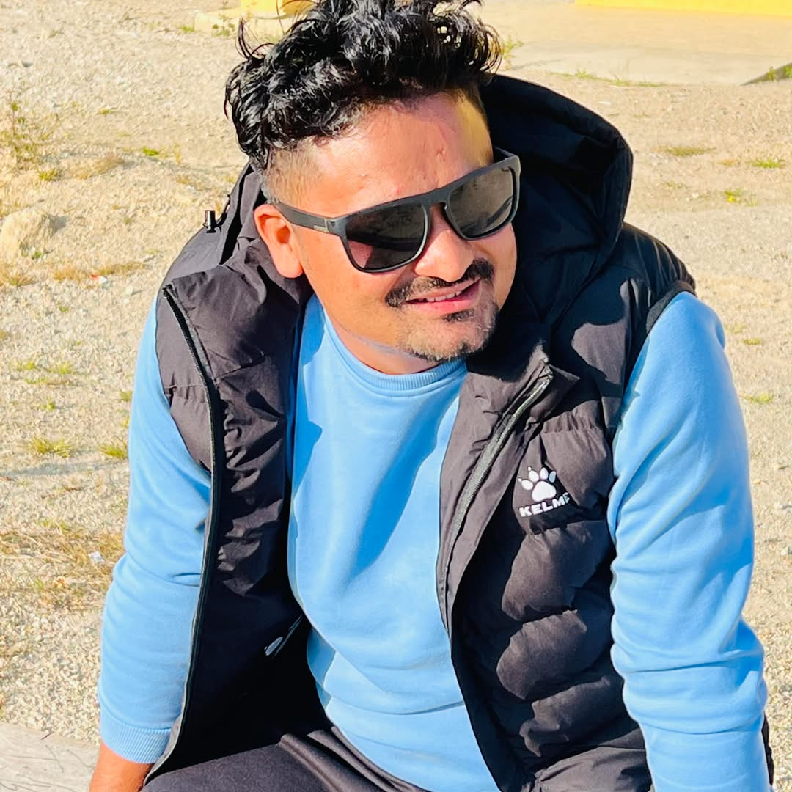

Bogati Bikash
Email:bikashbogati789@gmail.com
Phone:09032829127
Address:Godawari-8,Kailali,Nepal
Profile
BBA Graduate currently studying ERP, with a focus on combining business insight and digital systems to improve operational efficiency and support data-driven decisions
Education
- Master In Enterprise Resource Planning (ERP)
The Kyoto College Of Graduate Studies For Informatics
- Bachelor In Business Administration (BBA)
National Academy of Science and Technology
Work Experience
Supervisor
Company: [BOGATI NIRMAN SEWA PVT.LTD]
Location: [Dhangadhi Kailali, Nepal]
Duration: [Jan 2019] – [April, 2023]
- Planning and Organizing Work for construction projects.
- Supervising labor.
- act as a bridge between workers,engoneers, contractors and management.
- Resource Management.
- Keep daily progress report.
- Coordinated with project teams to track expenditures and support cost control.
Skills
- Web Development(basic)
- HTML
- Critical Thinking Support
-
- Organization Skills
- Leadership and Motivation
Social Media
Facebook